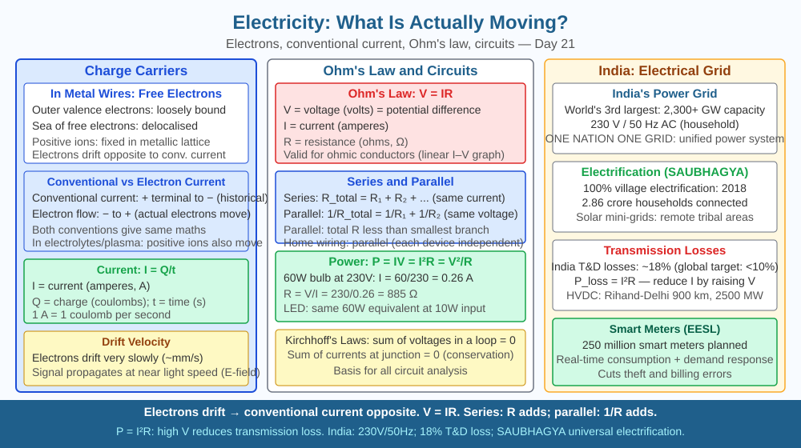

By the end of this lesson, you should be able to name what physically moves through a metal wire when current flows, explain why free electrons are responsible and not protons or ions, and predict what would happen to current if the number of free electrons in a conductor were reduced.
You switch on a torch and the bulb lights up instantly — even if the wires are a metre long. Intuitively, you might picture something rushing through the wire at enormous speed. But here is the puzzle: the actual particles carrying the charge drift at barely a few millimetres per second — roughly the pace of a slow crawl. So what is actually moving, why does the effect travel so fast, and why can't just anything flow through a wire?
Electric current in a metal wire is the drift of free electrons — negatively charged subatomic particles — through the metal's crystal lattice.
Why metals have free electrons. In a solid metal such as copper or aluminium, each atom contributes one or two outer electrons to a shared "sea." These electrons are not bound to any single atom; they wander throughout the metal. At room temperature, these free electrons are already moving randomly at speeds of about 10⁶ m/s in all directions, but their net displacement is zero — they cancel out.
What a battery does. When a battery is connected, it creates an electric potential difference (voltage) between the two ends of the wire. This sets up an electric field inside the conductor. The field exerts a force on every free electron simultaneously — the force is in the direction from the negative terminal toward the positive terminal (since electrons are negative, they are pushed toward the positive terminal). This superimposes a small, consistent drift on top of the random motion. The drift speed is small — about 0.1 mm/s in a typical copper wire — but there are roughly 8.5 × 10²⁸ free electrons per cubic metre in copper, so even a slow drift of an enormous number of electrons constitutes a significant current.
Conventional current vs electron flow. By historical convention, current is defined as flowing from the positive terminal to the negative terminal — opposite to the actual electron drift. This is because Benjamin Franklin defined current direction before electrons were discovered. The convention is kept in all circuit diagrams; just remember that electrons physically move the other way.
Why the effect is instantaneous. The electric field propagates through the wire at close to the speed of light (3 × 10⁸ m/s). All free electrons in the wire begin to drift at almost the same moment the battery is connected, just as water in a full pipe begins to flow at the far tap the instant you open it — you don't wait for water molecules to travel from one end to the other.
Why insulators block current. In materials like rubber, glass, or wood, outer electrons are tightly bound to their atoms. There are almost no free electrons available to drift. No drift means no current, no matter how large the voltage.
The formula for current. Electric current I is defined as the charge Q passing through a cross-section per unit time t:
I = Q / t
One ampere = one coulomb of charge per second. Charge is carried by electrons, each with a charge of 1.6 × 10⁻¹⁹ coulombs. So a 1 A current means about 6.24 × 10¹⁸ electrons pass any cross-section every second.
Think of a copper wire as a crowded corridor filled wall-to-wall with people (free electrons) who are all shuffling randomly. The corridor is already full — there is no empty space. When a voltage is applied, a gentle nudge pushes everyone in one direction. The person at the far end immediately feels the push because the nudge propagates through the crowd at the speed of sound in that crowd — not at the speed of any individual's walking.
Key relationships: - More free electrons per unit volume → higher current-carrying capacity - Higher voltage → stronger electric field → faster drift → more current - No free electrons (insulator) → no drift → no current - Conventional current flows positive to negative; electrons drift negative to positive
The included SVG shows a horizontal copper wire connected to a battery:

Q3 established that halving the free electron density in a conductor would reduce its current-carrying capacity. Now push further: a semiconductor like silicon has far fewer free electrons than copper at room temperature, but its conductivity increases dramatically when the temperature rises (unlike metals, where conductivity decreases with temperature). Given what you now know about free electrons and current, propose a mechanism to explain why heating a semiconductor increases its ability to carry current, while heating a copper wire decreases it.
What actually moves through a metal wire when electric current flows?
Correct answer: a
Why is understanding electron drift more useful than just knowing current flows?
Correct answer: a
What would happen to current flow if the conductor's free electron density were halved?
Correct answer: a
Explain today's concept to a student in Class 6 in 60 seconds without using the words "electron" or "current." Then explain it again using the correct scientific vocabulary, including the terms free electron, drift velocity, conventional current, and electric field. Both explanations should correctly describe what moves, in which direction, and why insulators don't work.
The actual drift speed of electrons in a household copper wire is astonishingly slow — about 0.1 mm per second, which means an electron would take roughly three hours to travel one metre. Yet your light switches on instantly. The explanation is that the electric field propagates at nearly the speed of light, setting all electrons in motion simultaneously — like how sound reaches every part of a steel rail at almost the same moment you tap one end, not because atoms travel that fast, but because the compression wave does.
Electric current in a metal wire is the slow, coordinated drift of free electrons — each carrying a charge of 1.6 × 10⁻¹⁹ C — driven by an electric field that propagates near the speed of light, which is why the effect is instant even though individual electrons barely move.